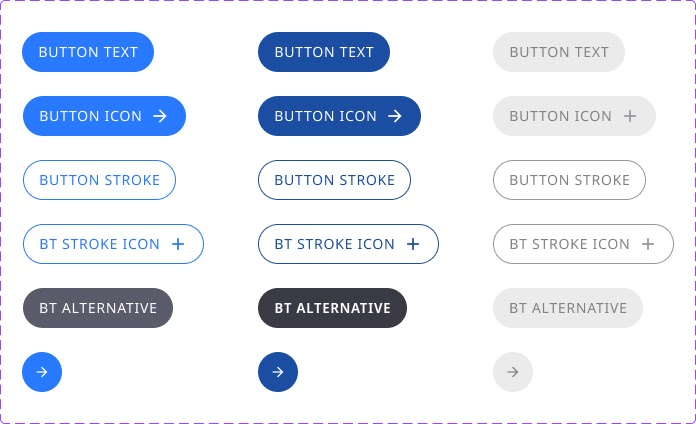
Back
Style Guide
On this page, you will find examples of style guidelines and notes on the use of different elements. The first example features a more modern look, with rounded corners and a primary blue colour. The second example has a more classic appearance, with rectangular borders and a vibrant primary green colour, better suited for highlighting a brand’s identity.
Style Guide 1
Buttons
In this example, the buttons were designed to accommodate different scenarios. All variants include active, hover, and disabled states. This approach follows the recommendations of Google’s Material Design 3.
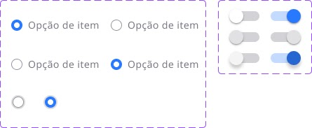
Selectors and Switches
The selection options shown here are componentised and prototyped to be responsive, including hover effects. Switches are commonly used to enable or disable additional fields and include active, hover, and disabled states for both enabled and disabled configurations.
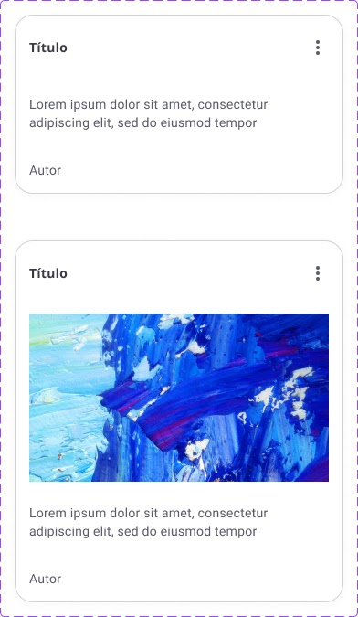
Cards
These cards, created according to the Material Design guidelines, are used for social interactions between app users. The upper example includes a title, body text, and author information. The lower example also includes an image.
To maintain consistency throughout the product’s visual identity, cards should follow the same border, shadow, and outline parameters as the other elements in the Style Guide.
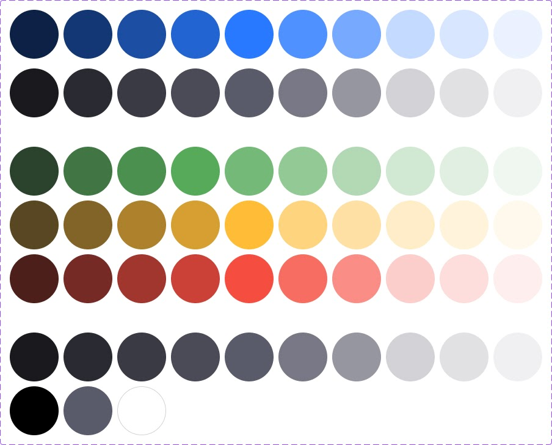
Colour Scheme
The colour scheme is essential to a product’s identity. Ideally, there should be enough colours to create an engaging visual appearance without making the interface confusing or compromising its identity.
In the example shown here, we work with primary and secondary colours, as well as colours for specific states such as success, warning, error, neutral, black, and white. This balanced palette ensures a clear and cohesive visual experience.
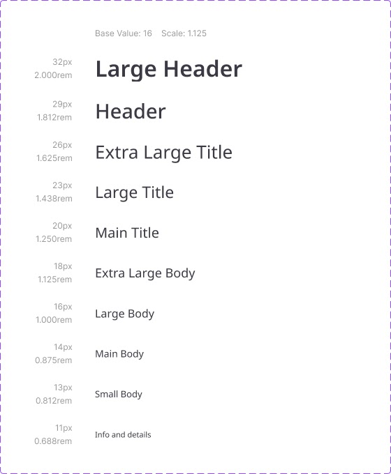
Typography
The typography system shown here provides enough text styles to organise page content dynamically and hierarchically without becoming overly varied. The selected font is Google’s Noto Sans, ensuring excellent readability.
Large headings use a semi-italic bold style, while medium-sized headings provide additional emphasis and hierarchy.
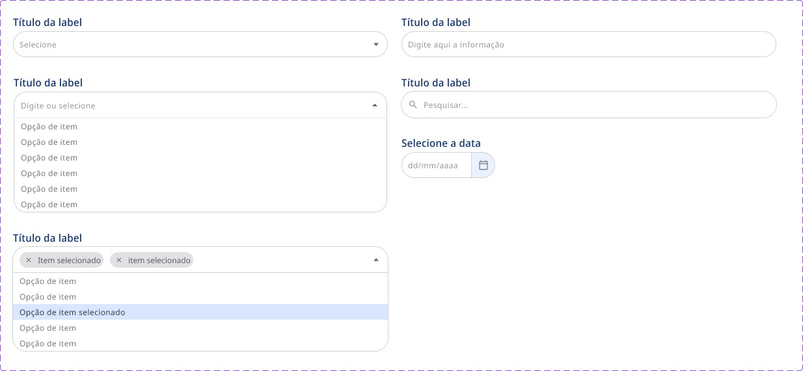
Labels
Labels are frequently used throughout the platform, both for search and filtering mechanisms and within questionnaire fields.
As part of the design system and Style Guide, labels also follow the defined typography, colours, corner radius, and spacing, ensuring visual consistency.
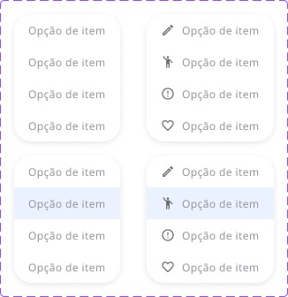
Drop menu / Popover
This menu can be used with or without icons. It is responsive and componentised to maintain a consistent structure throughout the platform. It provides users with multiple options without cluttering the interface, as the options are displayed only after clicking a button, typically a three-dot menu button.
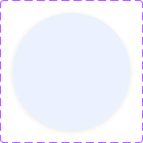
Shadows
Shadows are also standardised throughout the system. The shadow shown here is used for cards and objects within the main body of the page.
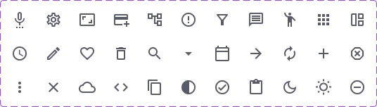
Iconography
These are the primary icons used throughout the application. Although the selection can be expanded, maintaining a set containing only the essential icons helps keep the system’s visual language consistent, promoting coherence and making navigation easier.
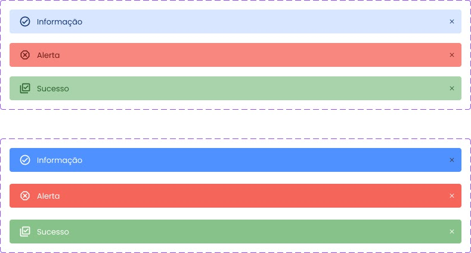
Alerts
This simple alert pattern was designed to appear at the bottom of the screen after the user performs an action, providing clear and unobtrusive feedback.
Style Guide 2
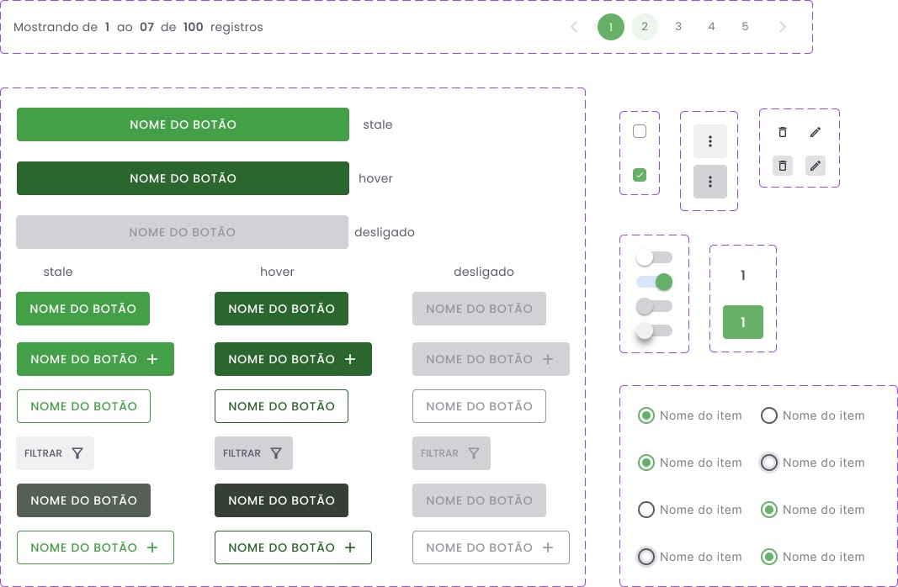
Buttons
This example demonstrates the use of variants to create a button system, including active, hover, and disabled states. The buttons are also prototyped to create an engaging and immersive interaction.
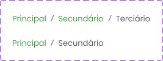
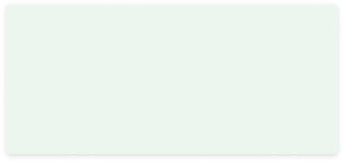
Breadcrumbs
Shadows
Breadcrumbs are used for navigation between pages within a workflow.
It is recommended to standardise shadows for similar objects, such as cards, images, buttons, and other elements.
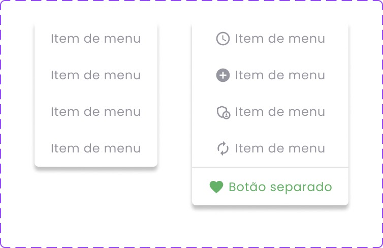
Drop menu / Popover
This menu can be strategically implemented to provide users with multiple actions or options while keeping the interface clean, as it is only displayed after clicking a specific button. It works particularly well with a three-dot menu button.
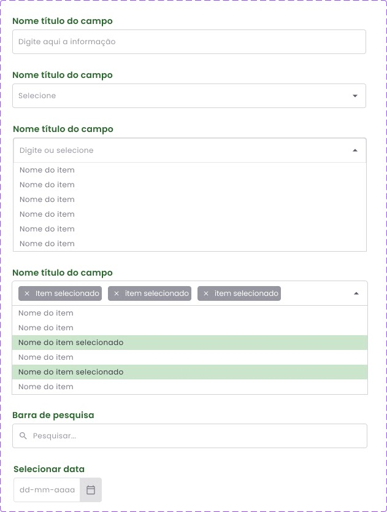
Labels
Labels are commonly used across different platforms and for various purposes. In the example shown here, we have text, single-selection, multi-selection, search, and date labels.
When prototyped, these components create an interactive experience and can make a significant difference in user engagement and immersion during product testing.
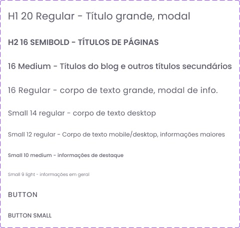
Typography
This typography system was designed with specific use cases in mind, with each font size and style serving a particular purpose. A typography system containing only the essential options creates greater fluidity in the design and makes the application more visually consistent.
Tables
This example demonstrates the combination of several Style Guide elements, such as colours, typography, iconography, spacing, and more. Standardising table styles helps create a consistent visual language throughout the platform, as tables are frequently used and serve a variety of purposes.
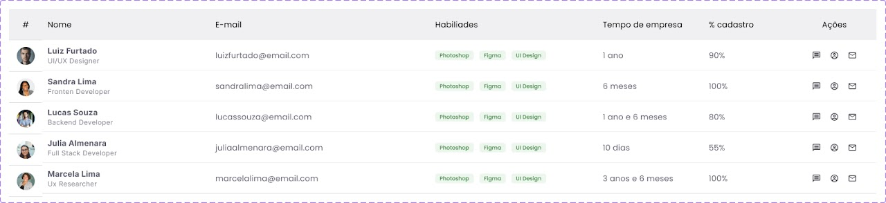
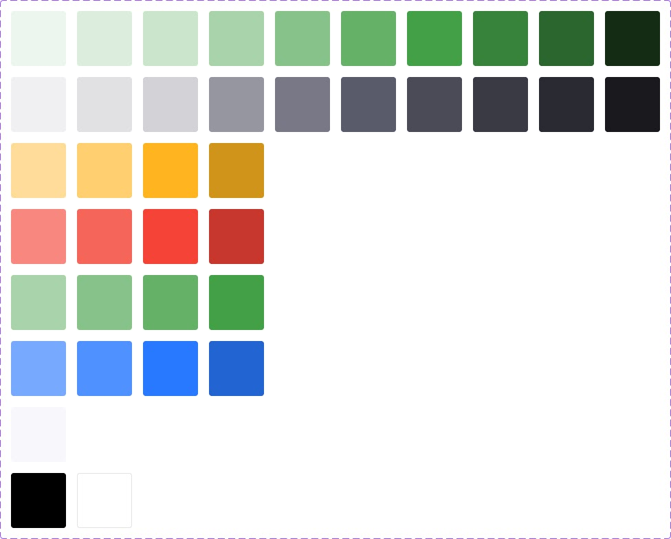
Colors
To ensure consistency and maintain the brand identity throughout the product, it is necessary to follow a defined colour scheme. In the example shown here, the primary colours come first, followed by secondary colours, warning, danger, success, information, a standard background colour, and finally black and white.